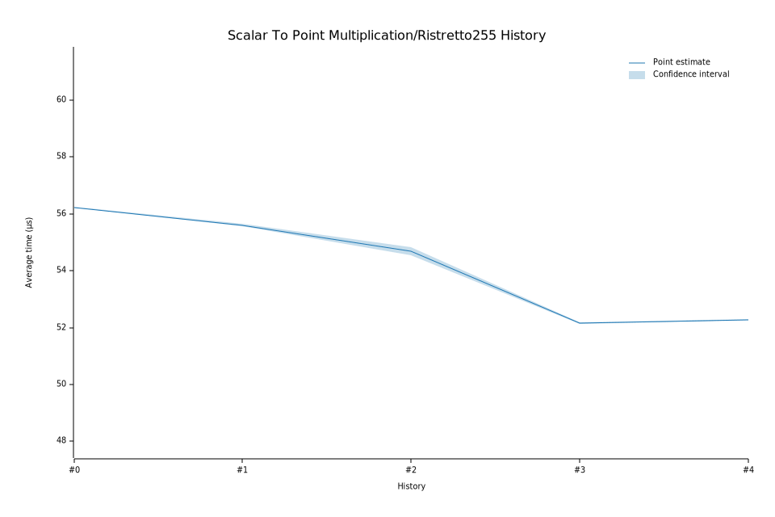

# 42024-02-01T09:14:23Z
|
Lower Bound |
Estimate |
Upper Bound |
| Value: |
52.28µs |
52.28µs |
52.29µs |
| Change in Value: |
+0.1852% |
+0.2323% |
+0.2695% |
No change in performance detected.
# 32024-01-09T09:56:48Z
|
Lower Bound |
Estimate |
Upper Bound |
| Value: |
52.14µs |
52.16µs |
52.20µs |
| Change in Value: |
-4.8588% |
-4.5809% |
-4.3061% |
No change in performance detected.
# 22023-06-01T08:56:45Z
|
Lower Bound |
Estimate |
Upper Bound |
| Value: |
54.54µs |
54.68µs |
54.83µs |
| Change in Value: |
-2.0826% |
-1.8073% |
-1.5055% |
No change in performance detected.
# 12023-04-27T10:43:25Z
|
Lower Bound |
Estimate |
Upper Bound |
| Value: |
55.58µs |
55.61µs |
55.64µs |
| Change in Value: |
-1.1348% |
-1.0306% |
-0.9223% |
No change in performance detected.
# 02023-03-09T11:48:41Z
|
Lower Bound |
Estimate |
Upper Bound |
| Value: |
56.21µs |
56.23µs |
56.24µs |